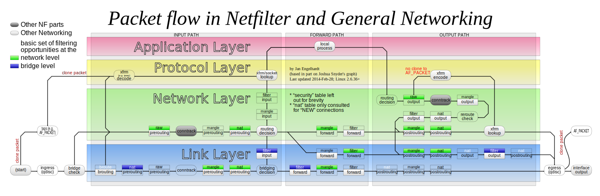

Autor: Jiří Hnídek / jiri.hnidek@tul.cz
“Pojem firewall označoval původně protipožární zeď, která slouží pro oddělení ohně v budově, aby se nešířil dále.”
“The authority to represent someone else, especially in voting.”
Netfilter definuje 5 záchytných bodů, kde se volají callback funkce:
NF_IP_PRE_ROUTING: při přijetí paketu před tím, než se rozhodne, jak se bude paket směrovatNF_IP_LOCAL_IN: paket má cíl na daném strojiNF_IP_FORWARD: paket se má předat dálNF_IP_IP_LOCAL_OUT: paket byl vytvořen na daném strojiNF_IP_POST_ROUTING: před odesláním mimo stroj.Než paket dorazí do socketu, tak jeho cesta může být hodně komplikovaná:
Iptables obsahují 5 základních řetězců pravidel:
PREROUTING je spouštěn: NF_IP_PRE_ROUTINGINPUT je spouštěn: NF_IP_LOCAL_INFORWARD je spouštěn: NF_IP_FORWARDOUTPUT je spouštěn: NF_IP_LOCAL_OUTPOSTROUTING je spouštěn: NF_IP_POST_ROUTINGPravidla (pro IPv4) můžeme vypsat pomocí:
iptables -L -v -n --line-numbersPro IPv6 pomocí:
ip6tables -L -v -n --line-numbers